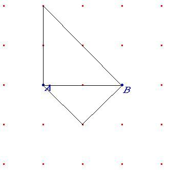

Problema 84
Busca un tercer punto C de manera que forme con A y B un triángulo rectángulo. Hazlo de todas las maneras posibles.
Hernán, P., Salar, A, Soler, M. (1983), Es posible/Grupo Cero. ICE de la Universidad de Valencia. (pag 24)
Solución de Maite Peña Alcaraz, alumna del Colegio Porta Celi de Sevilla:
Tenemos tres casos: que el triángulo formado sea rectángulo en A, en B o en C. Que sea rectángulo en A o en B se tratará como un sólo caso ya que se puede hacer el mismo procedimiento.
Caso 1:
El triángulo ABC es rectángulo en A o B (para simplificar lo consideraremos en A).
Basta trazar una perpendicular por A a AB y esa recta será el lugar geométrico de los puntos C.
En la trama cuadrada dará lugar a 4 triángulos rectángulos con A recto y 4 con B recto.
Caso 2:
Bastará trazar una circunferencia con centro en el punto medio del segmento AB y radio AB/2 y esta circunferencia es un arco capaz de 90º. La circunferencia será el lugar geométrico de los puntos C.
En la trama cuadrada dará lugar a dos triángulos rectángulos.
En la figura, se observan dos casos:
